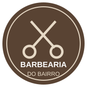
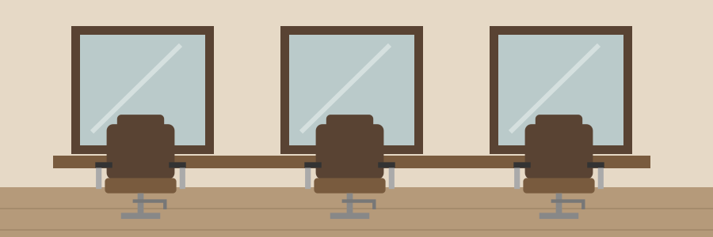
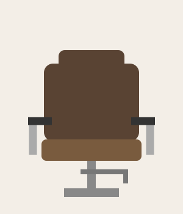
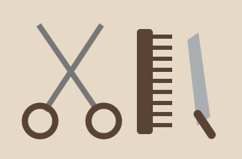

Na Barbearia do Bairro, você encontra um espaço tranquilo para cuidar do visual. Do corte tradicional ao degradê, a ideia é ouvir o que você quer e fazer um serviço bem feito.
Escolha o serviço que você precisa. Também fazemos o combo de cabelo e barba para quem prefere resolver tudo na mesma visita.

A Barbearia do Bairro é um comércio fictício em Antônio Carlos, Santa Catarina. Nossa proposta é atender quem gosta de um corte caprichado e de uma boa conversa. Valorizamos a organização do espaço, o cuidado com os materiais e o respeito ao estilo de cada cliente.
Projeto de estudo: a barbearia e os contatos são fictícios. O mapa mostra apenas a cidade de referência.
Atendimento de terça a sábado, das 9h às 18h. Para consultar horários ou solicitar um agendamento, use o contato abaixo.